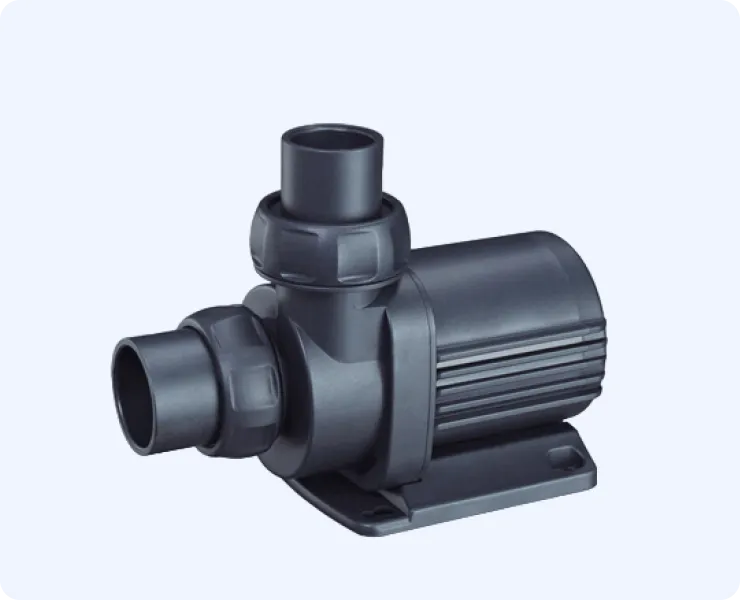

Вернуться в каталог

Насосы для пруда
Насос прудовый DCP-15000, 15000 л/час, 105 Вт, макс. напор 7м
Цена и наличие
- 1 шт.883,45 BYN / шт.В наличии
Данные на 23.11.2026.
Характеристики
- Тип насоса
- прудовый
- Напор
- 7 м
- Производительность
- 15000 л/ч
- Мощность
- 105 Вт
- Производительность
- 15000 л/час
- Напряжение
- 24 В
- Особенности
- с электронной регулировкой мощности
- Присоединение
- 40,50 мм
- Страна производитель, бренд
- Jebao, Китай
Описание
JEBAO DCP-15000 — многофункциональная, бесшумная погружная помпа для пресноводных и морских аквариумов.
Насос для пруда Jebao DCP-15000, 15000 л/ч, 7м напор, 105 вт, 24В, с электронной регулировкой мощности JEBAO DCP-15000 — многофункциональная, бесшумная погружная помпа для пресноводных и морских аквариумов. Оснащена керамической осью, регулятором потока воды. Подходит для разных водоёмов, где необходимо создать стабильную циркуляцию и течение воды. Способствует разрушению пылевой и бактериальной пленки на верхнем слое воды, выравниванию температуры по всей ёмкости, не давая воде застаиваться, что хорошо влияет на подводных обитателей.